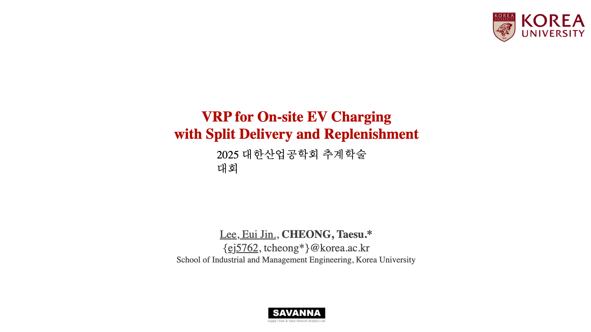
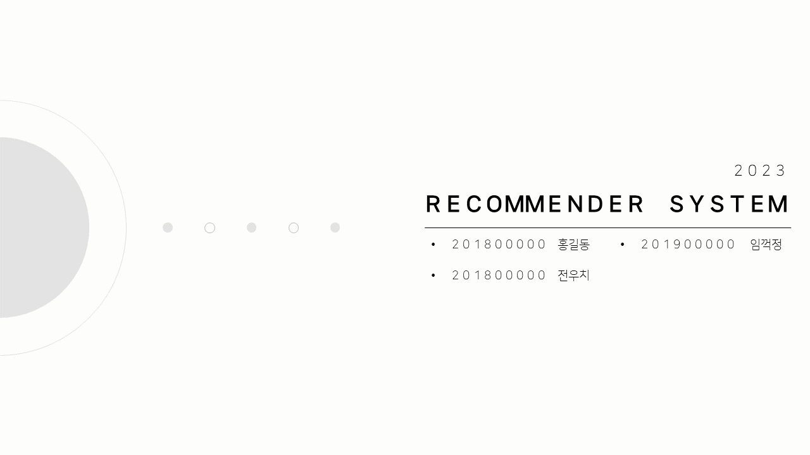

Project Database
Problem solving projects, organized like a workspace.
프로젝트를 단순 이미지 모음이 아니라 문제 정의, 해결 접근, 사용한 방법론, 결과를 빠르게 비교할 수 있는 데이터베이스형 포트폴리오로 정리했습니다.

Research
On-site EV Charging VRP
이동형 전기차 충전 서비스를 차량 경로 문제로 모델링하고, 분할 배송과 depot 재방문을 반영해 수리모형과 강화학습 기반 휴리스틱을 설계했습니다.
Role: Model formulation / RL design
Method: MIP, Tabu Search, PPO
Outcome: Large instance quality improved

Team Project
Deep Learning Recommendation Systems
데이터 애널리틱스 특론에서 딥러닝 추천 시스템을 조사하고 NCF, Caser, SASRec, BERT 기반 접근을 비교 발표한 프로젝트입니다.
Role: Research / Slide design
Method: DNN, CNN, Sequential models
Outcome: Algorithm comparison deck